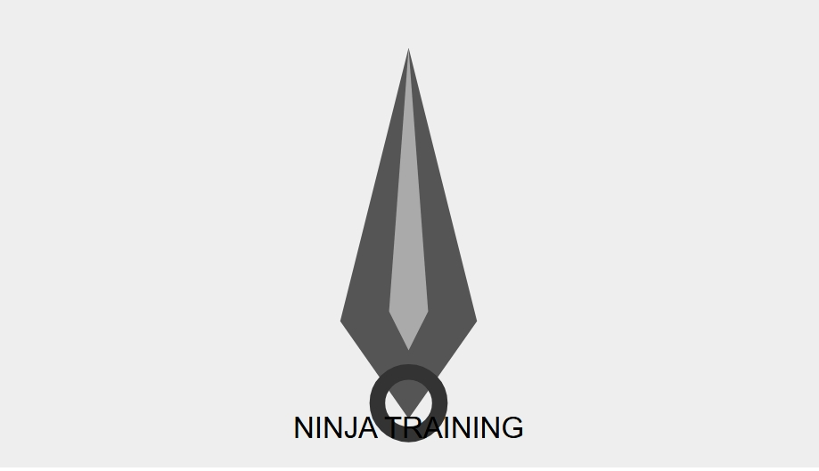

Naruto Blazing Revival Wiki
Guías, personajes, misiones y consejos para volver al campo de batalla.
Inicio
Guías
Galería
Contacto
Multimedia

Imagen de un Kunai.
Vídeo trailer
Tu navegador no admite la reproducción de vídeo.